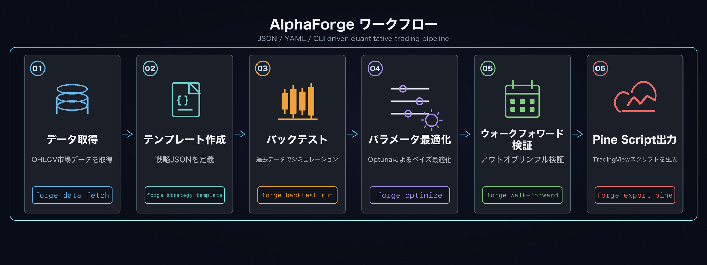

エンドツーエンド戦略開発ワークフロー¶
ヒストリカルデータの取得から自動発注までの典型的な開発フロー。Claude Code などのコーディングエージェントと組み合わせると、各ステップの自動化やパラメータ探索を高速化できます。

前提
本ページは はじめに で forge をインストール済み（バイナリ版）かつ、作業ディレクトリで forge system init を実行済み（forge.yaml ・data/ 等が存在）であることを前提とします。コマンドはすべて作業ディレクトリのカレントで forge を直接呼ぶ形で記載しています。
開発者向けの alpha-trade モノレポで作業している場合は、各 forge ... を FORGE_CONFIG=forge.yaml uv --directory alpha-forge run forge ... に読み替えてください。
1. データ取得¶
対象シンボルのヒストリカルデータをローカルに保存します。
FX / 先物 / 暗号資産のシンボル命名
yfinance（既定プロバイダー）では資産クラスごとに固定のサフィックスが必要です。
| 資産クラス | 例 |
|---|---|
| 米国株 / ETF | SPY, AAPL, QQQ |
| FX | USDJPY=X, EURUSD=X, GBPJPY=X（必ず =X） |
| 先物 | CL=F（WTI 原油）, GC=F（金）, ES=F（S&P 先物） |
| 暗号資産 | BTC-USD, ETH-USD（ハイフン） |
シェルでシングルクォートが必要なシンボル（USDJPY=X 等）はクォートで囲んでください。
2. 戦略テンプレート作成¶
テンプレートから戦略 JSON の雛形を生成し、パラメータを編集してから登録します。
利用可能なテンプレート一覧を確認する方法（F-005）
forge strategy template list のような専用コマンドは現時点では存在しません。
代わりに次のいずれかでテンプレート ID を確認してください。
-
エラーメッセージを利用する（最も手早い）— 適当な存在しない名前を指定すると、 エラーで利用可能テンプレート一覧が表示されます。
-
ドキュメントを参照する — 各テンプレートの詳細（指標構成・対象市場・推奨用途） は 戦略テンプレート集 に一覧があります。
JSON で必ず編集すべき 3 項目
生成された JSON はテンプレート名そのままのため、最低限以下を編集してから登録してください。
strategy_id: テンプレート名 (sma_crossover_v1) のままだと既存テンプレートと衝突するので、usdjpy_sma_v1のようにユニークなものに変更name: 人が読んで分かる名前target_symbols: 既定は[]。対象シンボル（例:["USDJPY=X"]）を入れるか、forge backtest run <SYMBOL>で都度指定
最適化を予定している場合は optimizer_config.param_ranges も埋めてください（未指定でもデフォルト範囲で動きますが、明示する方が再現性が高くなります）。
編集後、戦略 DB に登録します。
DB 登録を省きたい場合 (--strategy-file)
forge backtest run / forge optimize run には --strategy-file <path> オプションがあり、JSON を直接指定できます（DB 登録不要）。試行錯誤段階では便利です。
3. バックテスト実行¶
定義した戦略のパフォーマンスを過去データで検証します。
forge backtest run 'USDJPY=X' --strategy usdjpy_sma_v1
# 結果のチャート URL を表示してブラウザで開く
forge backtest chart usdjpy_sma_v1 --open
4. パラメータ最適化¶
Optuna のベイズ最適化（TPE）で最適なパラメータを探索します。
forge optimize run 'USDJPY=X' --strategy usdjpy_sma_v1 \
--metric sharpe_ratio --trials 300 --save
# 保存された結果ファイル（optimize_usdjpy_sma_v1_<timestamp>.json）を新しい戦略として適用
forge optimize apply data/results/optimize_usdjpy_sma_v1_<timestamp>.json \
--to-strategy usdjpy_sma_v1_optimized
ベストスコアが -inf になったとき
全 trial が NaN を返した状態です。多くは「最適化対象パラメータの探索範囲が狭すぎる」「対象期間で取引数が極端に少ない」が原因。optimizer_config.param_ranges を見直すか、データ期間を広げて再実行してください。
5. ウォークフォワード検証¶
過学習を検出するため、訓練期間とテスト期間を分けた検証を行います。
WFT（Walk-Forward Test）とは何か（F-006）
forge optimize run だけだと 全期間でパラメータを最適化 してしまい、最適化に
使ったデータに過剰適合（オーバーフィット）した「カーブフィッティング戦略」を
本物の好成績と誤認しがちです。
WFT は「期間を等間隔のウィンドウに区切り、学習期間（In-Sample / IS）で 最適化したパラメータを、未学習のテスト期間（Out-of-Sample / OOS）で評価する」 という検証手法です。OOS の成績が IS と乖離していなければ、その戦略は 時系列を跨いで頑健（ロバスト）と判断できます。
| 用語 | 意味 |
|---|---|
| IS (In-Sample) | 学習期間。Optuna が最適化に使うウィンドウ前半 |
| OOS (Out-of-Sample) | テスト期間。最適化結果をぶつける未来データ（ウィンドウ後半） |
| ウィンドウ | 期間を等分割した 1 区間。--windows 5 なら全期間を 5 分割 |
| IS/OOS ペア | 各ウィンドウの IS スコアと OOS スコアの組 |
判定の目安: OOS の Sharpe が IS の 半分以上 あればロバスト寄り、
IS だけ突出して OOS が大幅劣化するならカーブフィット疑い。詳細なオプションは
forge optimize walk-forward CLI リファレンス を参照。
forge optimize walk-forward 'USDJPY=X' \
--strategy usdjpy_sma_v1_optimized --windows 5
# 感度分析（最適化結果 JSON ファイルを指定）
forge optimize sensitivity data/results/optimize_usdjpy_sma_v1_<timestamp>.json
WFT が全ウィンドウ「OOS 0 件」になるとき
データ期間が短いと各ウィンドウで取引が発生せずスキップされます。FX / 1d データなら 5 年（約 1,250 行）以上を推奨。forge data fetch '<SYM>' --period 5y のように長期データを先に揃えるか、--windows 2 で粗くしてください。
6. Pine Script 生成¶
TradingView 用のアラートスクリプトを自動生成します。
出力先: output/pinescript/usdjpy_sma_v1_optimized.pine
関連コマンド
各サブコマンドの完全なオプション一覧は CLI リファレンス を参照してください。次のステップは TradingView への Pine Script 反映 です。
実際の出力サンプルを確認するには
各コマンドの出力フォーマットや、equity curve・最適化結果・Pine Script の具体例は 実行結果と成果物サンプル を参照してください。